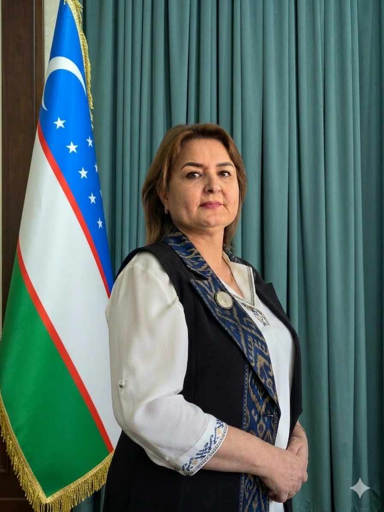
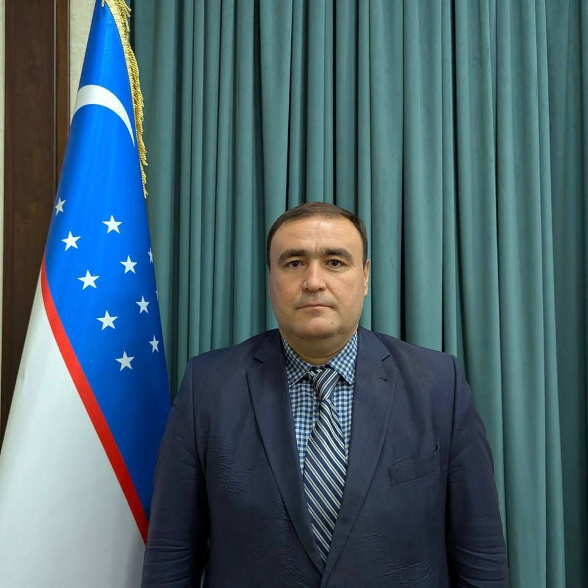
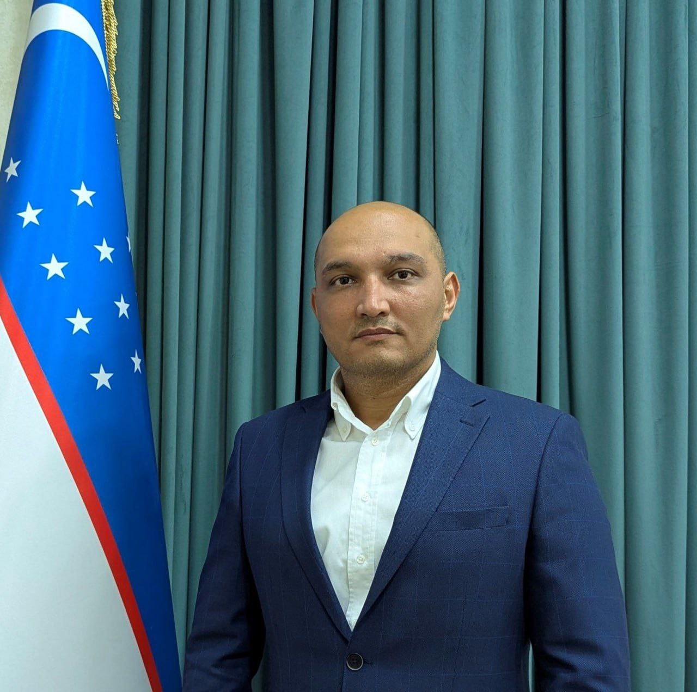

Chilonzor tumani
1-son Texnikumi
Bosh sahifa
Kasblar
Biz haqimizda
Rahbariyat
Aloqa
Joylashuv
O'zbek
Русский
English
Rahbariyat
Direktor
Ataxanov Feruz Ravshanqulovich
Chilonzor tuman 1-son texnikumi direktori
Qabul vaqti
Dushanba, Seshanba, Juma
14:00 dan 16:00 gacha
Direktor o‘rinbosarlari

Nazarova Zulfiya Baltabayevna
O‘quv ishlari bo‘yicha direktor o‘rinbosari
Ish vaqtida
09:00 dan 16:00 gacha

Magametov Ruslan Taxirovich
Yoshlar ishlari bo‘yicha direktor o‘rinbosari
Ish vaqtida
09:00 dan 16:00 gacha

Saidjanov Sobir Alimovich
Ishlab chiqarish ta’limi bo‘yicha direktor o‘rinbosari
Ish vaqtida
09:00 dan 16:00 gacha
Shoymanov G‘anisher Alisher o‘g‘li
Xalqaro ta’lim dasturlarini muvofiqlashtirish bo‘limi boshlig‘i
Ish vaqtida
09:00 dan 16:00 gacha